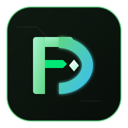

Speicher prüfen
USB- oder SD-Kapazität prüfen sowie Lese- und Schreibtempo messen.

FileDOAdvanced File & Storage Operations ToolWindows CLI & GUI
Speicherprüfungen und Dateioperationen für Windows, wenn Sie wissen müssen, ob Sie einem USB-Stick, einer SD-Karte, einer Festplatte oder einem Ordner Ihre Daten anvertrauen können.
Funktionen
Die Operationen sind nach Aufgaben gruppiert. Prüfungen und Berichte ändern keine Daten; Löschen und Aufräumen werden getrennt ausgeführt.
USB- oder SD-Kapazität prüfen sowie Lese- und Schreibtempo messen.
Dateien finden, die fehlerhaft oder mit dauerhaften Aussetzern gelesen werden.
Duplikatgruppen durchsehen und die Liste vor dem Löschen speichern.
Mit Fortschrittsanzeige kopieren oder einen Bericht über Ordnerunterschiede erhalten.
Wenn Sie bereit sind
Das Windows-x64-Installationsprogramm: eine Datei herunterladen und ausführen. Die anderen Wege sind der Microsoft Store, winget, ein portables ZIP und die blanke MSI; jeder Link unten führt immer zum neuesten Release.
Windows 10 und 11, x64 · eine Datei, keine Befehlszeile
· ·
MB ·
SHA256
Nicht code-signiert: Windows zeigt möglicherweise „Der Computer wurde durch Windows geschützt“ an und fragt nach Administratorrechten. Die SHA256 prüfen, dann „Weitere Informationen“ und „Trotzdem ausführen“ wählen. Warum, und was anzuklicken ist
E: durch Ihr Ziel ersetzen. Dieser Befehl zeigt Informationen an und löscht keine Dateien.
Die FileDO-<version>-setup.exe aus den Releases installiert FileDO als gewöhnliches Windows-Programm: filedo im PATH, zwei Startmenü-Einträge (FileDO und FileDO Disk Manager) und ein Desktop-Symbol, dazu - als abwählbares Feature - die Gruppe File DO.. im Kontextmenü jeder Datei und den Dokumenttyp .fd-sec. winget und das ZIP registrieren nichts; filedo fdsec register legt dieselben Einträge an. Ganze Anleitung.
Nach der sicheren Prüfung genügt eine Operation für eine klare Aufgabe.
Kapazitäts- und Leistungstests für Datenträger, Ordner und Netzwerkpfade.
Lese-Checks mit Berichten und Steuerung für langsame HDD-/USB-Medien. --max-files N liest höchstens N Dateien (0 bedeutet unbegrenzt); --resume gelingt, wenn jede Datei bereits geprüft wurde und unverändert ist.
Abgleich nach Inhalt mit Cache; eine Liste speichern und später verarbeiten.
Kopieren mit Fortschrittsanzeige und Zeitlimits sowie Berichte über Unterschiede zwischen Ordnern. compare --strict liefert Exit 1 bei Unterschieden und Exit 2 bei einem unvollständigen Vergleich.
wipe löscht den Inhalt eines Ordners - ein gewöhnliches Löschen, die Daten bleiben wiederherstellbar, bis der Platz neu belegt wird; fill … del füllt den freien Speicherplatz mit Daten und löscht sie wieder, und bei einer einzelnen Datei überschreibt wipe die Datei vor dem Entfernen - beides, damit sich nichts so leicht wiederherstellen lässt. wipe verlangt, dass Sie WIPE eintippen; Laufwerks- und Freigabe-Stammverzeichnisse, Reparse-Punkte und der TEMP-Ordner des Systems erfordern auch mit --force eine interaktive Bestätigung. Nichts davon lässt sich rückgängig machen.
Eine Datei wandert hinter einem Passwort in einen .fd-sec-Container und kommt wieder heraus; ein Doppelklick öffnet den Inhalt in dem Programm, zu dem er gehört, aus einer Kopie, die danach wieder entfernt wird. Ein leeres Passwort bedeutet nur Verschleierung, und das Programm sagt das deutlich.
Ein ganzes Volume in einer .fdd-Datei: Es wird als Laufwerksbuchstabe eingebunden und lässt sich ohne Einbinden lesen, prüfen und exportieren. Es kann auch in einer GPT-Partition liegen, die FileDO im freien Speicherplatz anlegt: nur GPT-Datenträger, feste Größe, nicht schneller als eine Datei, und jedes Einbinden und Lesen verlangt die Zustimmung eines Administrators - ein Abbild in eine Datei nicht mehr. Die Datenträgerverwaltung listet alle Datenträger an einer Stelle auf. Ohne Passwort ist er verschleiert, nicht verschlüsselt. Nur unter Windows; das Einbinden braucht Administratorrechte, und die Microsoft-Store-Version kann nicht einbinden.
Das ZIP und das winget-Paket enthalten filedo_win: eine Leiste mit den Aufgaben und je Aufgabe eine Seite, dazu die Seite „Befehl“ für jede beliebige Operation. Seine Schaltfläche „Über“ packt die Logs in ein ZIP und öffnet Ihr Mailprogramm: Sie sehen zuerst das Archiv, und nichts wird gesendet, bevor Sie es auslösen.
Die vollständige Referenz bleibt hier, damit sie nicht mit dem ersten Schritt konkurriert.
Zuerst info verwenden. Ein Kapazitätstest legt Testdateien an; wählen Sie das richtige Laufwerk und stellen Sie sicher, dass genug freier Speicherplatz vorhanden ist.
Zuerst eine Liste oder einen Bericht erstellen. Befehle mit del entfernen Daten; prüfen Sie Pfad und Ergebnis, bevor Sie sie ausführen.
wipe, fill … del und die Löschmodi bei compare/duplicates können Daten entfernen. Untersuchen Sie vorher das Laufwerk, die Liste oder den Bericht und sichern Sie Ihre Daten.
wipe verlangt, dass Sie WIPE eintippen. Laufwerks- und Freigabe-Stammverzeichnisse, Reparse-Punkte und der TEMP-Ordner des Systems erfordern auch mit --force eine interaktive Bestätigung.
filedo-CLI und die Begleitprogramme.
filedo, filedo_check, filedo_fill, filedo_test und die GUI filedo_win.
Program Files, dazu PATH, die Verknüpfungen und - Ihre Wahl bei der Installation - die Explorer-Integration. Die Features werden im Installationsfenster oder bei einer unbeaufsichtigten Installation mit ADDLOCAL gewählt, und „Ändern“ in „Apps & Features“ schaltet sie später um.
Die README enthält den vollständigen Befehlskatalog, die Optionen der Lese-Checks, Netzwerkbeispiele und GUI-Details. GitHub Releases enthält für jedes Release die Setup-EXE, das ZIP, die MSI und die SHA256-Dateien.
Die Wege im Einzelnen stehen auf eigenen Seiten: Die Startseite hält Aufgabe und Anwendungsfall im Blick, während eine einzelne Anleitung nicht zur Befehlswüste wird.
Information, Kapazität, Tempo und Lese-Checks - mit den Testdateien und der Administratoranforderung erklärt.
Wie Sie zuerst eine Liste oder einen Bericht erstellen, eine Kopie anlegen und den Sicherungsordner prüfen.
Wie Sie eine Aufgabe wählen, ihre Seite durcharbeiten, prüfen und im Fenster filedo_win ausführen; die Seite „Befehl“ und geheime Dateien.
Warum „Der Computer wurde durch Windows geschützt“ erscheint, was Sie anklicken müssen und was die App niemals tut.
Was das Installationsprogramm hinzufügt und wie Sie die Kontextmenü-Einträge ein- oder ausschalten.
.fd-sec-Container: packen, wiederherstellen, ohne Entpacken öffnen - und was jede Wahl verspricht.
.fdd-Container: anlegen, einbinden, ohne Einbinden lesen - und wie sich Verschleierung von Verschlüsselung unterscheidet.